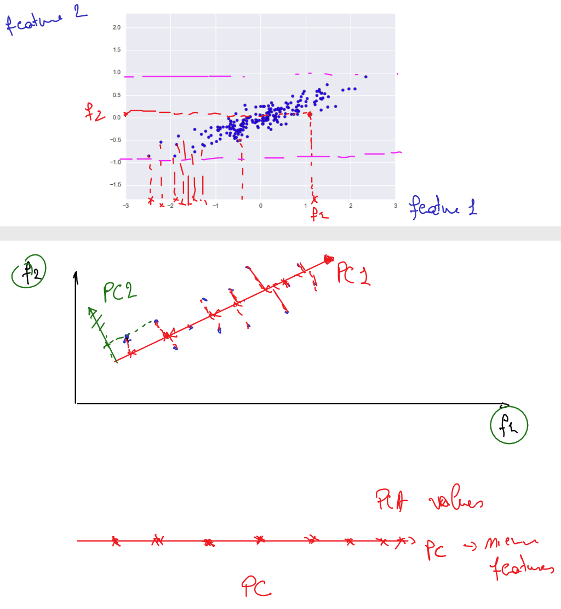
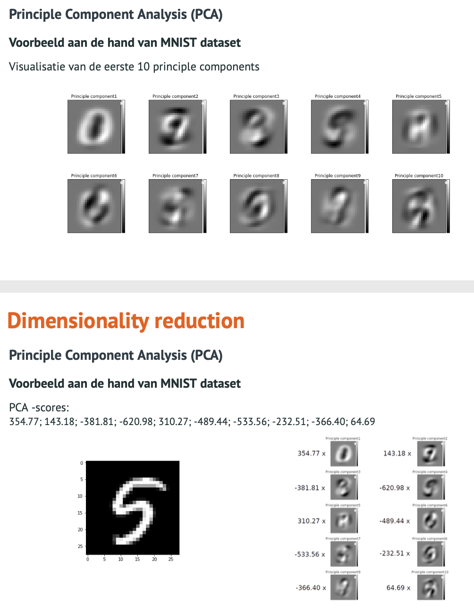

Principle Component Analysis (PCA)
Code : C Principle Component Analysis (PCA)
Principal component analysis (PCA) is een wiskundige techniek om het aantal (mogelijks) gecorreleerde features te transformeren naar een kleiner aantal niet-gecorreleerde features die de principle components worden genoemd.
Principal Component Analysis Explained Visually
In dit voorbeeld zijn er twee features. Als we de f2 feature zouden laten vallen dan komen alle f1 features op de x-as te liggen en verliezen we teveel info.
Bij PCA trekken we een nieuwe as door het midden van de puntenwolk (PC1) en brengen de datapunten op die nieuwe as over.
Hierdoor hebben we PCA values (= nieuwe feature) waarbij we ook de PCA moeten bijhouden zodat we nadien de features ook ongeveer in de buurt van de oude waarde kunnen brengen. (meeste feature f2 details zijn we natuurlijk kwijt geraakt bij overdracht naar de nieuwe as)

jaren 80-90 werd PCA gebruikt voor gezichtsherkenning (10000 pixels naar 40 features)

Je krijgt de linkse 5 afbeelding door elke PCA (afbeelding) te vermenigvuldigen met de PCA-score en hiervan de sommatie te maken.
Kiezen van het aantal principle components - verklaarde variantie
PCA zoekt de componenten die maximaal de variantie in de dataset verklaren. We willen zoveel mogelijk informatie overhouden na dimensionality reduction.
De eerste PCA's bevatten de meeste informatie.